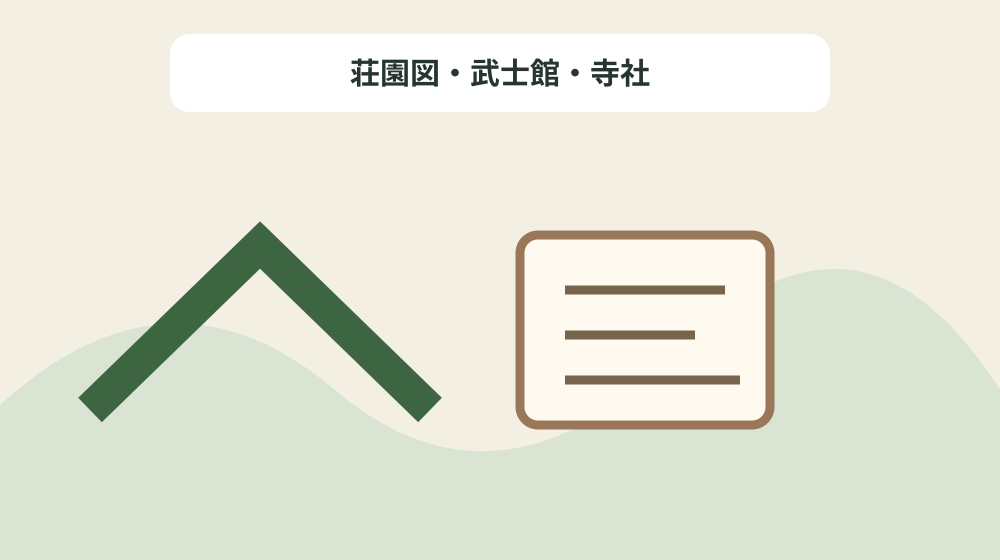
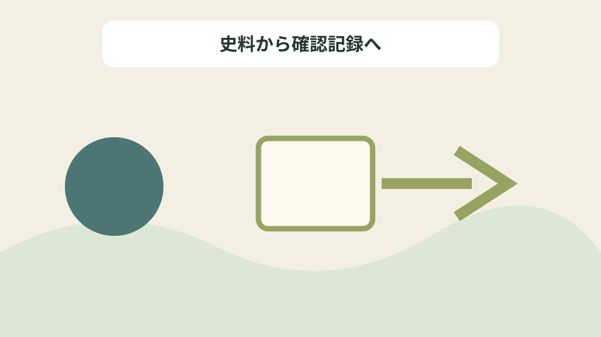

鎌倉時代の森町を荘園・地頭・寺社史料で読む
結論：荘園名、地頭、寺社、文書、推定範囲を現代地番と分けることで、資料の記載と現在の状態を混同しない鎌倉所領史料地図になります。
鎌倉所領史料地図で解く問い
森町公式資料には「平安末期、遠江は源平勢力の攻防、後白河法皇などの王朝勢力の駆け引きの場として政治的な画策を受けた地域であり、一宮に熊野神(並宮王子社(なみのみやおうじしゃ))が祀られたこともそうした意味を含んでいるとみられる。」と記されています。鎌倉時代の森町を荘園・地頭・寺社史料で読むでは、この記載を鎌倉所領史料地図の一行にし、荘園名、地頭、寺社、文書、推定範囲を現代地番と分けるための根拠として扱います。資料名と確認日を先に書き、後から説明だけが独り歩きしないようにします。
同じページで確認できる「この頃、森山には中原氏の屋敷跡や墓所があったことや、小國社が遠江国の鎮守一宮であったことが「大集経文集紙背文書」から理解される。」は、前の事実と似ていても別の対象です。荘園図・武士館・寺社を読み解くときは、資料の掲載順ではなく、名称・年代・場所・根拠の対応を見ます。写真、家族の記憶、公的資料を三列に分け、食い違いを未確認として残します。
鎌倉所領史料地図では「1188年(文治4年)には、義定が願主となり、 岩室寺血極谷 ( いわむろでらじごくだに ) (一宮大久保大屋敷か)で大般若経が書写された。」の確認欄と「このほか、円田郷には山名荘の領主山名七郎がいたと伝えられ、館跡から当時の 舶載 ( はくさい ) 青磁などが出土した。」の照会欄を分けます。公式本文が述べていない現況や公開可否は未確認と書き、家族の記憶には話者と聞取日を添えます。旧記録を消さず、回答日と確認先を付けた新しい行を追加します。
公式本文から確定できる十二事実
森町公式資料には「また、源頼朝は、岩室寺で義定が 義経 ( よしつね ) 逃亡の手引きをしたのではないかと疑念を持つなど、当地が安田義定の勢力下の拠点に置かれていたことを 窺 ( うかが ) い知ることができる。」と記されています。鎌倉時代の森町を荘園・地頭・寺社史料で読むでは、この記載を鎌倉所領史料地図の一行にし、荘園名、地頭、寺社、文書、推定範囲を現代地番と分けるための根拠として扱います。主語と対象を原文へ戻し、似た地名や人物を同じものとして扱いません。
同じページで確認できる「(6)武士の館の図。江戸時代に描かれたもので、水濠をめぐらした館の図である。 (個人所蔵)」は、前の事実と似ていても別の対象です。荘園図・武士館・寺社を読み解くときは、資料の掲載順ではなく、名称・年代・場所・根拠の対応を見ます。資料の利点は典拠へ戻れることにあり、現在の状態を保証するものではありません。
鎌倉所領史料地図では「この頃、森山には中原氏の屋敷跡や墓所があったことや、小國社が遠江国の鎮守一宮であったことが「大集経文集紙背文書」から理解される。」の確認欄と「図−19 森町域の荘園 ・ 公領推定図。現在の一宮・円田・草ヶ谷・森・天宮あたりが一宮の神領域であった。飯田荘は、上郷・戸和田郷・下郷の三郷からなり、三倉郷は国衙領、石河・中田・谷河も同様であったとみられる。」の照会欄を分けます。公式本文が述べていない現況や公開可否は未確認と書き、家族の記憶には話者と聞取日を添えます。不動産の道路、境界、登記、建物安全性は、この歴史資料とは別に調べます。
鎌倉所領史料地図の列を決める
森町公式資料には「このほか、円田郷には山名荘の領主山名七郎がいたと伝えられ、館跡から当時の 舶載 ( はくさい ) 青磁などが出土した。」と記されています。鎌倉時代の森町を荘園・地頭・寺社史料で読むでは、この記載を鎌倉所領史料地図の一行にし、荘園名、地頭、寺社、文書、推定範囲を現代地番と分けるための根拠として扱います。年号の横へ出来事を示す動詞を残し、制作年と伝来年を一つにしません。
同じページで確認できる「また、源頼朝は、岩室寺で義定が 義経 ( よしつね ) 逃亡の手引きをしたのではないかと疑念を持つなど、当地が安田義定の勢力下の拠点に置かれていたことを 窺 ( うかが ) い知ることができる。」は、前の事実と似ていても別の対象です。荘園図・武士館・寺社を読み解くときは、資料の掲載順ではなく、名称・年代・場所・根拠の対応を見ます。不足する情報を空欄の理由として残し、推測で表を完成させません。
鎌倉所領史料地図では「(4)大般若波羅密多経。遠江初代守護安田義定が領主となった。 (滋賀県 柳瀬在地講所蔵)」の確認欄と「禅勝房 ( ぜんしょうぼう ) は、 熊谷直実 ( くまがいなおざね ) の説法を聴き、法然の浄土教に 帰依 ( きえ ) した蓮華寺第72代を継ぐ 傑僧 ( けっそう ) で、阿弥陀堂屋敷に 即身成仏 ( そくしんじょうぶつ ) した。」の照会欄を分けます。公式本文が述べていない現況や公開可否は未確認と書き、家族の記憶には話者と聞取日を添えます。まだ売ると決めていない段階でも、資料の所在と根拠を家族で共有できます。

年代の種類を動詞で分ける
森町公式資料には「(5) 称名寺 ( しょうみょうじ )。金沢北条市の菩提寺で、森の蓮華寺に宛てた文書が「大集経紙背文書」となって伝来している。 (横浜市金沢区)」と記されています。鎌倉時代の森町を荘園・地頭・寺社史料で読むでは、この記載を鎌倉所領史料地図の一行にし、荘園名、地頭、寺社、文書、推定範囲を現代地番と分けるための根拠として扱います。所在地が示されても見学可能とは限らないため、公開条件を別に確認します。
同じページで確認できる「(4)大般若波羅密多経。遠江初代守護安田義定が領主となった。 (滋賀県 柳瀬在地講所蔵)」は、前の事実と似ていても別の対象です。荘園図・武士館・寺社を読み解くときは、資料の掲載順ではなく、名称・年代・場所・根拠の対応を見ます。問い合わせは対象名、参照ページ、確認済みの事実、知りたい一点に絞ります。
鎌倉所領史料地図では「図−19 森町域の荘園 ・ 公領推定図。現在の一宮・円田・草ヶ谷・森・天宮あたりが一宮の神領域であった。飯田荘は、上郷・戸和田郷・下郷の三郷からなり、三倉郷は国衙領、石河・中田・谷河も同様であったとみられる。」の確認欄と「(5) 称名寺 ( しょうみょうじ )。金沢北条市の菩提寺で、森の蓮華寺に宛てた文書が「大集経紙背文書」となって伝来している。 (横浜市金沢区)」の照会欄を分けます。公式本文が述べていない現況や公開可否は未確認と書き、家族の記憶には話者と聞取日を添えます。最初の一行から始め、十二事実を同時に確定しようとしないことが継続の要点です。
場所・所蔵・公開条件を混同しない
森町公式資料には「平安末期、遠江は源平勢力の攻防、後白河法皇などの王朝勢力の駆け引きの場として政治的な画策を受けた地域であり、一宮に熊野神(並宮王子社(なみのみやおうじしゃ))が祀られたこともそうした意味を含んでいるとみられる。」と記されています。鎌倉時代の森町を荘園・地頭・寺社史料で読むでは、この記載を鎌倉所領史料地図の一行にし、荘園名、地頭、寺社、文書、推定範囲を現代地番と分けるための根拠として扱います。写真、家族の記憶、公的資料を三列に分け、食い違いを未確認として残します。
同じページで確認できる「安田義定は、1180年(治承4年)富士川の合戦の直後遠江守護に任ぜられ、3年後の寿永2年には国司として国務を遂行し、在地の浅羽氏・相良氏の 平定 ( へいてい ) に努めていた。」は、前の事実と似ていても別の対象です。荘園図・武士館・寺社を読み解くときは、資料の掲載順ではなく、名称・年代・場所・根拠の対応を見ます。旧記録を消さず、回答日と確認先を付けた新しい行を追加します。
鎌倉所領史料地図では「1188年(文治4年)には、義定が願主となり、 岩室寺血極谷 ( いわむろでらじごくだに ) (一宮大久保大屋敷か)で大般若経が書写された。」の確認欄と「1188年(文治4年)には、義定が願主となり、 岩室寺血極谷 ( いわむろでらじごくだに ) (一宮大久保大屋敷か)で大般若経が書写された。」の照会欄を分けます。公式本文が述べていない現況や公開可否は未確認と書き、家族の記憶には話者と聞取日を添えます。資料名と確認日を先に書き、後から説明だけが独り歩きしないようにします。
良い点
森町公式資料には「また、源頼朝は、岩室寺で義定が 義経 ( よしつね ) 逃亡の手引きをしたのではないかと疑念を持つなど、当地が安田義定の勢力下の拠点に置かれていたことを 窺 ( うかが ) い知ることができる。」と記されています。鎌倉時代の森町を荘園・地頭・寺社史料で読むでは、この記載を鎌倉所領史料地図の一行にし、荘園名、地頭、寺社、文書、推定範囲を現代地番と分けるための根拠として扱います。資料の利点は典拠へ戻れることにあり、現在の状態を保証するものではありません。
同じページで確認できる「このほか、円田郷には山名荘の領主山名七郎がいたと伝えられ、館跡から当時の 舶載 ( はくさい ) 青磁などが出土した。」は、前の事実と似ていても別の対象です。荘園図・武士館・寺社を読み解くときは、資料の掲載順ではなく、名称・年代・場所・根拠の対応を見ます。不動産の道路、境界、登記、建物安全性は、この歴史資料とは別に調べます。
鎌倉所領史料地図では「この頃、森山には中原氏の屋敷跡や墓所があったことや、小國社が遠江国の鎮守一宮であったことが「大集経文集紙背文書」から理解される。」の確認欄と「(3)安田義定父子の墓。鎌倉期の重量感のある五輪塔で、安田一族の墓も同所に祀られている。 (山梨市 霊光寺)」の照会欄を分けます。公式本文が述べていない現況や公開可否は未確認と書き、家族の記憶には話者と聞取日を添えます。主語と対象を原文へ戻し、似た地名や人物を同じものとして扱いません。
注文したい点
森町公式資料には「このほか、円田郷には山名荘の領主山名七郎がいたと伝えられ、館跡から当時の 舶載 ( はくさい ) 青磁などが出土した。」と記されています。鎌倉時代の森町を荘園・地頭・寺社史料で読むでは、この記載を鎌倉所領史料地図の一行にし、荘園名、地頭、寺社、文書、推定範囲を現代地番と分けるための根拠として扱います。不足する情報を空欄の理由として残し、推測で表を完成させません。
同じページで確認できる「図−19 森町域の荘園 ・ 公領推定図。現在の一宮・円田・草ヶ谷・森・天宮あたりが一宮の神領域であった。飯田荘は、上郷・戸和田郷・下郷の三郷からなり、三倉郷は国衙領、石河・中田・谷河も同様であったとみられる。」は、前の事実と似ていても別の対象です。荘園図・武士館・寺社を読み解くときは、資料の掲載順ではなく、名称・年代・場所・根拠の対応を見ます。まだ売ると決めていない段階でも、資料の所在と根拠を家族で共有できます。
鎌倉所領史料地図では「(4)大般若波羅密多経。遠江初代守護安田義定が領主となった。 (滋賀県 柳瀬在地講所蔵)」の確認欄と「平安末期、遠江は源平勢力の攻防、後白河法皇などの王朝勢力の駆け引きの場として政治的な画策を受けた地域であり、一宮に熊野神(並宮王子社(なみのみやおうじしゃ))が祀られたこともそうした意味を含んでいるとみられる。」の照会欄を分けます。公式本文が述べていない現況や公開可否は未確認と書き、家族の記憶には話者と聞取日を添えます。年号の横へ出来事を示す動詞を残し、制作年と伝来年を一つにしません。
対案・結論
森町公式資料には「(5) 称名寺 ( しょうみょうじ )。金沢北条市の菩提寺で、森の蓮華寺に宛てた文書が「大集経紙背文書」となって伝来している。 (横浜市金沢区)」と記されています。鎌倉時代の森町を荘園・地頭・寺社史料で読むでは、この記載を鎌倉所領史料地図の一行にし、荘園名、地頭、寺社、文書、推定範囲を現代地番と分けるための根拠として扱います。問い合わせは対象名、参照ページ、確認済みの事実、知りたい一点に絞ります。
同じページで確認できる「禅勝房 ( ぜんしょうぼう ) は、 熊谷直実 ( くまがいなおざね ) の説法を聴き、法然の浄土教に 帰依 ( きえ ) した蓮華寺第72代を継ぐ 傑僧 ( けっそう ) で、阿弥陀堂屋敷に 即身成仏 ( そくしんじょうぶつ ) した。」は、前の事実と似ていても別の対象です。荘園図・武士館・寺社を読み解くときは、資料の掲載順ではなく、名称・年代・場所・根拠の対応を見ます。最初の一行から始め、十二事実を同時に確定しようとしないことが継続の要点です。
鎌倉所領史料地図では「図−19 森町域の荘園 ・ 公領推定図。現在の一宮・円田・草ヶ谷・森・天宮あたりが一宮の神領域であった。飯田荘は、上郷・戸和田郷・下郷の三郷からなり、三倉郷は国衙領、石河・中田・谷河も同様であったとみられる。」の確認欄と「この頃、森山には中原氏の屋敷跡や墓所があったことや、小國社が遠江国の鎮守一宮であったことが「大集経文集紙背文書」から理解される。」の照会欄を分けます。公式本文が述べていない現況や公開可否は未確認と書き、家族の記憶には話者と聞取日を添えます。所在地が示されても見学可能とは限らないため、公開条件を別に確認します。

家族に残す確認記録
森町公式資料には「平安末期、遠江は源平勢力の攻防、後白河法皇などの王朝勢力の駆け引きの場として政治的な画策を受けた地域であり、一宮に熊野神(並宮王子社(なみのみやおうじしゃ))が祀られたこともそうした意味を含んでいるとみられる。」と記されています。鎌倉時代の森町を荘園・地頭・寺社史料で読むでは、この記載を鎌倉所領史料地図の一行にし、荘園名、地頭、寺社、文書、推定範囲を現代地番と分けるための根拠として扱います。旧記録を消さず、回答日と確認先を付けた新しい行を追加します。
同じページで確認できる「(5) 称名寺 ( しょうみょうじ )。金沢北条市の菩提寺で、森の蓮華寺に宛てた文書が「大集経紙背文書」となって伝来している。 (横浜市金沢区)」は、前の事実と似ていても別の対象です。荘園図・武士館・寺社を読み解くときは、資料の掲載順ではなく、名称・年代・場所・根拠の対応を見ます。資料名と確認日を先に書き、後から説明だけが独り歩きしないようにします。
鎌倉所領史料地図では「1188年(文治4年)には、義定が願主となり、 岩室寺血極谷 ( いわむろでらじごくだに ) (一宮大久保大屋敷か)で大般若経が書写された。」の確認欄と「(6)武士の館の図。江戸時代に描かれたもので、水濠をめぐらした館の図である。 (個人所蔵)」の照会欄を分けます。公式本文が述べていない現況や公開可否は未確認と書き、家族の記憶には話者と聞取日を添えます。写真、家族の記憶、公的資料を三列に分け、食い違いを未確認として残します。
現地確認と権利資料を分ける
森町公式資料には「また、源頼朝は、岩室寺で義定が 義経 ( よしつね ) 逃亡の手引きをしたのではないかと疑念を持つなど、当地が安田義定の勢力下の拠点に置かれていたことを 窺 ( うかが ) い知ることができる。」と記されています。鎌倉時代の森町を荘園・地頭・寺社史料で読むでは、この記載を鎌倉所領史料地図の一行にし、荘園名、地頭、寺社、文書、推定範囲を現代地番と分けるための根拠として扱います。不動産の道路、境界、登記、建物安全性は、この歴史資料とは別に調べます。
同じページで確認できる「1188年(文治4年)には、義定が願主となり、 岩室寺血極谷 ( いわむろでらじごくだに ) (一宮大久保大屋敷か)で大般若経が書写された。」は、前の事実と似ていても別の対象です。荘園図・武士館・寺社を読み解くときは、資料の掲載順ではなく、名称・年代・場所・根拠の対応を見ます。主語と対象を原文へ戻し、似た地名や人物を同じものとして扱いません。
鎌倉所領史料地図では「この頃、森山には中原氏の屋敷跡や墓所があったことや、小國社が遠江国の鎮守一宮であったことが「大集経文集紙背文書」から理解される。」の確認欄と「また、源頼朝は、岩室寺で義定が 義経 ( よしつね ) 逃亡の手引きをしたのではないかと疑念を持つなど、当地が安田義定の勢力下の拠点に置かれていたことを 窺 ( うかが ) い知ることができる。」の照会欄を分けます。公式本文が述べていない現況や公開可否は未確認と書き、家族の記憶には話者と聞取日を添えます。資料の利点は典拠へ戻れることにあり、現在の状態を保証するものではありません。
大石の視点
森町公式資料には「このほか、円田郷には山名荘の領主山名七郎がいたと伝えられ、館跡から当時の 舶載 ( はくさい ) 青磁などが出土した。」と記されています。鎌倉時代の森町を荘園・地頭・寺社史料で読むでは、この記載を鎌倉所領史料地図の一行にし、荘園名、地頭、寺社、文書、推定範囲を現代地番と分けるための根拠として扱います。まだ売ると決めていない段階でも、資料の所在と根拠を家族で共有できます。
同じページで確認できる「(3)安田義定父子の墓。鎌倉期の重量感のある五輪塔で、安田一族の墓も同所に祀られている。 (山梨市 霊光寺)」は、前の事実と似ていても別の対象です。荘園図・武士館・寺社を読み解くときは、資料の掲載順ではなく、名称・年代・場所・根拠の対応を見ます。年号の横へ出来事を示す動詞を残し、制作年と伝来年を一つにしません。
鎌倉所領史料地図では「(4)大般若波羅密多経。遠江初代守護安田義定が領主となった。 (滋賀県 柳瀬在地講所蔵)」の確認欄と「(4)大般若波羅密多経。遠江初代守護安田義定が領主となった。 (滋賀県 柳瀬在地講所蔵)」の照会欄を分けます。公式本文が述べていない現況や公開可否は未確認と書き、家族の記憶には話者と聞取日を添えます。不足する情報を空欄の理由として残し、推測で表を完成させません。
まとめ
森町公式資料には「(5) 称名寺 ( しょうみょうじ )。金沢北条市の菩提寺で、森の蓮華寺に宛てた文書が「大集経紙背文書」となって伝来している。 (横浜市金沢区)」と記されています。鎌倉時代の森町を荘園・地頭・寺社史料で読むでは、この記載を鎌倉所領史料地図の一行にし、荘園名、地頭、寺社、文書、推定範囲を現代地番と分けるための根拠として扱います。最初の一行から始め、十二事実を同時に確定しようとしないことが継続の要点です。
同じページで確認できる「平安末期、遠江は源平勢力の攻防、後白河法皇などの王朝勢力の駆け引きの場として政治的な画策を受けた地域であり、一宮に熊野神(並宮王子社(なみのみやおうじしゃ))が祀られたこともそうした意味を含んでいるとみられる。」は、前の事実と似ていても別の対象です。荘園図・武士館・寺社を読み解くときは、資料の掲載順ではなく、名称・年代・場所・根拠の対応を見ます。所在地が示されても見学可能とは限らないため、公開条件を別に確認します。
鎌倉所領史料地図では「図−19 森町域の荘園 ・ 公領推定図。現在の一宮・円田・草ヶ谷・森・天宮あたりが一宮の神領域であった。飯田荘は、上郷・戸和田郷・下郷の三郷からなり、三倉郷は国衙領、石河・中田・谷河も同様であったとみられる。」の確認欄と「安田義定は、1180年(治承4年)富士川の合戦の直後遠江守護に任ぜられ、3年後の寿永2年には国司として国務を遂行し、在地の浅羽氏・相良氏の 平定 ( へいてい ) に努めていた。」の照会欄を分けます。公式本文が述べていない現況や公開可否は未確認と書き、家族の記憶には話者と聞取日を添えます。問い合わせは対象名、参照ページ、確認済みの事実、知りたい一点に絞ります。
よくある質問
鎌倉所領史料地図で最初に書く項目は何ですか。
資料名、対象名、確認日、根拠の種類です。荘園名、地頭、寺社、文書、推定範囲を現代地番と分けるため、現況と家族の記憶は別欄にします。
鎌倉所領史料地図に所在地があれば現地を見学できますか。
掲載だけでは判断できません。平安末期、遠江は源平勢力の攻防、後白河法皇などの王朝勢力の駆け引きの場として政治的な画策を受けた地域であり、一宮に熊野神(並宮王子社(なみのみやおうじしゃ))が祀られたこともそうした意味を含んでいるとみられる。という記録は荘園図・武士館・寺社を読む根拠ですが、現在の公開日時や立入り条件の根拠ではありません。対象ごとに管理者の案内を確認します。
鎌倉所領史料地図で年代が複数ある場合はどれを採用しますか。
1188年(文治4年)には、義定が願主となり、 岩室寺血極谷 ( いわむろでらじごくだに ) (一宮大久保大屋敷か)で大般若経が書写された。という記録を起点に、荘園図・武士館・寺社の制作、記録、移転、発見などの動作を分けます。異なる出来事の年は統合せず、それぞれの典拠を同じ行に残します。
家族の記憶は鎌倉所領史料地図の公式事実と一緒に書けますか。
また、源頼朝は、岩室寺で義定が 義経 ( よしつね ) 逃亡の手引きをしたのではないかと疑念を持つなど、当地が安田義定の勢力下の拠点に置かれていたことを 窺 ( うかが ) い知ることができる。という公的記載とは別欄にします。荘園図・武士館・寺社について話した人、聞取日、確信度を書けば、家族の記憶を残しつつ公的資料へ上書きせず比較できます。
公式情報源
最終確認日：2026-08-18 ／ 公表事実と執筆者の解釈・意見を分けて記載しています。